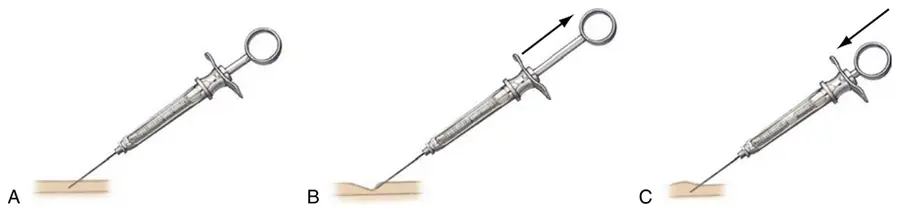

نسخه استخراجشده؛ ترجمه یا تأیید علمی انجام نشده است. وضعیت: captured
سوزن به استخوان خورده و آسپیره میکنی. کنار دیافراگم کارپول رگهی قرمز کمرنگی میبینی و بیمار آرام منتظر است. تزریق را ادامه میدهی یا نه؟

IANB بیشترین آسپیراسیون مثبت را میان تزریقهای داخل دهانی دارد: ۱۰ تا ۱۵٪. عصب کنار شریان و ورید آلوئولار تحتانی میگذرد؛ پس آسپیراسیون اینجا تشریفات نیست.
در تزریقهایی که آسپیراسیون مثبت در آنها شایع است، سوزن گیج ۲۵ را انتخاب کن؛ آسپیراسیون با سوزن باریکتر، مثل گیج ۲۷ یا ۳۰، کمتر قابل اعتماد است.
علائم بافت نرم معمولاً ۳ تا ۵ دقیقه پس از تزریق ظاهر میشوند، ولی پالپ دیرتر بیحس میشود. پیش از شروع کار نشانهها را یکییکی بسنج، و اگر دندان هنوز حس دارد، پیش از آنکه IANB را شکستخورده بدانی ۱۰ تا ۱۵ دقیقه صبر کن. بیحسی بافت نرم هیچگاه تضمین بیحسی پالپ نیست.
اگر زبان بیحس شده ولی لب پایین هنوز حس دارد، فقط عصب لینگوال گرفته است و عصب آلوئولار تحتانی نه. کار را شروع نکن.
عصب باکال لب پایین را عصبدهی نمیکند؛ پس بلاک باکال را میتوانی بلافاصله پس از IANB بزنی و نگران نباشی که بیحسی لب را گمراهکننده کند.